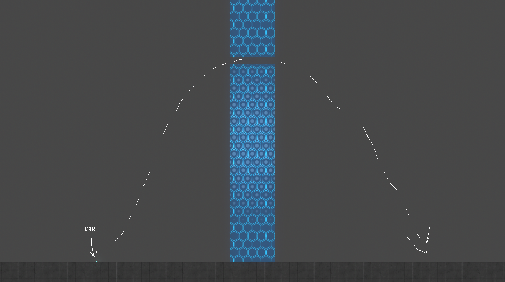
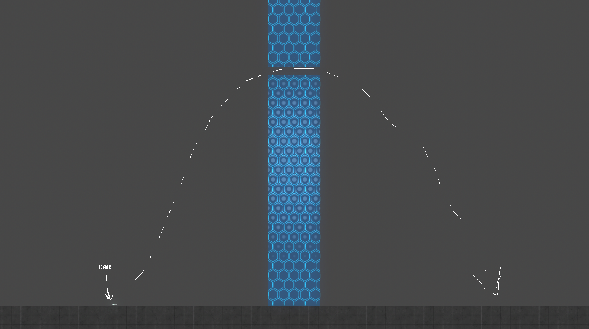

A Guide To Most Distance Mechanics
> Throttling Boost When Going Up Then Forward
This is a very specific scenario, but it does exist. What I'm referring to is a case when you have to gripfly up really high, and then have to make a move straight forward.
Example:

The way to make the most of this situation involves letting go of boost and floating up as late as you can without it resulting in you going up too high, then floating forward a bit with grip over the obstacle, and then boosting with your small amount of remaining boost forward to clear the obstacle.

This is seen not often, but I've seen it in 'Ninja (Sunset Mode)' by Backgrounds' at cp3, and I think one or two other places in other hard levels.
Example:

The way to make the most of this situation involves letting go of boost and floating up as late as you can without it resulting in you going up too high, then floating forward a bit with grip over the obstacle, and then boosting with your small amount of remaining boost forward to clear the obstacle.
This is seen not often, but I've seen it in 'Ninja (Sunset Mode)' by Backgrounds' at cp3, and I think one or two other places in other hard levels.
<< < 5 > >>
1 2 3 4 5 6 7 8 9 10 11 12
1 2 3 4 5 6 7 8 9 10 11 12
• Tricks • Turning In Midair With Gripfly • Slightly Faster Wing Turning • Differences in Forward Gripfly and Frontward Gripfly • Throttling Boost When Going Up Then Forward • Advantage Of Slow Falling Before Going Up • Wings To Make Higher Jumps • Air Drift • Vertical Gripfly Interaction With Force Zone • Advantage Of Backwards Gripfly • Rotational Alignment Through Rotating In One Direction • Cooldown Through Thruster/Grip Tapping •